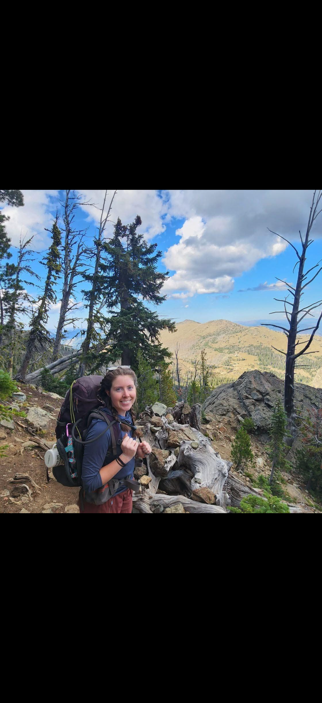
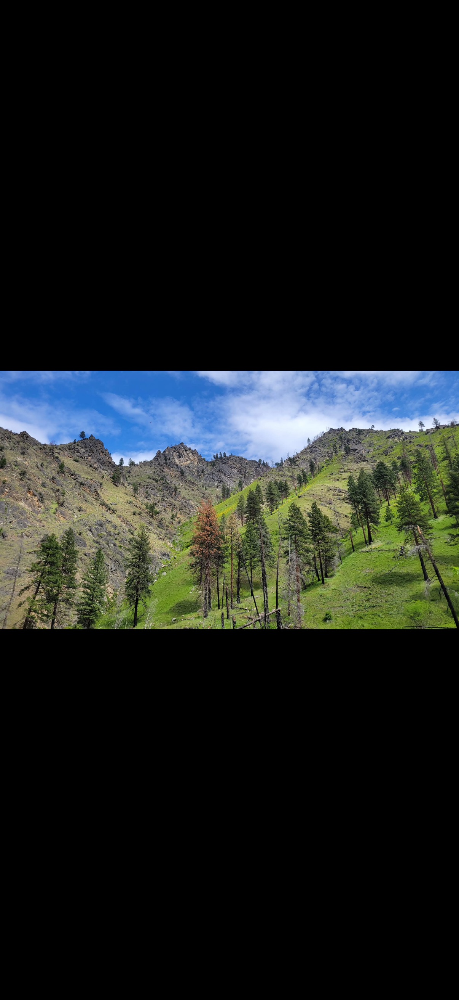
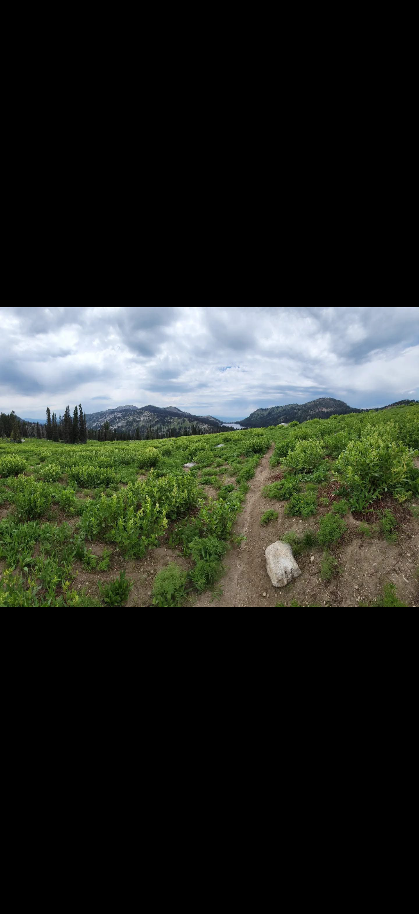

McCall, Idaho
Climbing days that are safe, memorable, and confidence-building.
Conscious Climbing offers guided outdoor climbing experiences near Ponderosa State Park for beginners, families, and experienced climbers wanting a focused day outside.




Current Weather in McCall
Loading current conditions...
About Ponderosa State Park
Ponderosa State Park sits on a peninsula reaching into Payette Lake and offers forest trails, lake views, wildlife habitat, and easy access to surrounding granite terrain. It is a great base area for outdoor days that combine hiking, climbing, and scenic overlooks.
We can help guests plan a full day that includes a guided climb plus recommendations for nearby trailheads, viewpoints, and post-climb recovery spots in McCall.